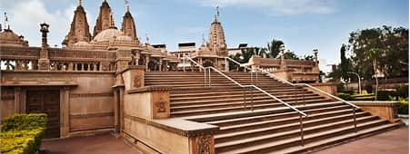

Welcome To Rajkot ....

Rangilu Rajkot
Rajkot is the first-largest city in the Indian state of Gujarat after Ahmedabad, Vadodara, and Surat, and is in the centre of the Saurashtra region of Gujarat. Rajkot is the 35th-largest metropolitan area in India, with a population of more than 2 million as of 2021. Rajkot is the 6th cleanest city of India, and it is the 7th fastest-growing city in the world as of March 2021.[10] The city contains the administrative headquarters of the Rajkot District, 245 km from the state capital Gandhinagar, and is located on the banks of the Aji and Nyari rivers. Rajkot was the capital of the Saurashtra State from 15 April 1948 to 31 October 1956, before its merger with Bombay State on 1 November 1956. Rajkot was reincorporated into Gujarat State on 1 May 1960.
Rajkot has been under different rulers since it was founded. It has had a long history and had a significant influence in the Indian independence movement. Rajkot was home to many personalities like Mahatma Gandhi. Rajkot is in a transition period of growing cultural, industrial, and economical activities. Rajkot is the 26th largest city in India and the 22nd fastest-growing urban area in the world.Rajkot was the capital of Saurashtra state from 15 April 1948 to 31 October 1956 before merging in bilingual Bombay State on 1 November 1956. Rajkot was merged into Gujarat State from bilingual Bombay state on 1 May 1960. Thakur Saheb Pradyumansinhji died in 1973. His son, Manoharsinhji Pradyumansinhji, has carved out a political career at the provincial level, succeeded him. He served as a Member of the Gujarat Legislative Assembly for several years and as the state Minister for Health and Finance. Monoharsinhji's son, Mandattasinh Jadeja has embarked on a business career.
Famous Places in Rajkot City
- Kaba Gandhi No Dehlo
- Watson Museum
- Lal Pari Lake
- The Eldorado Park
- Jubilkee Garden
- Pradyuman Zoological Park
- Rotary Dolls Museum
Rajkot City Famous Food Item
- Dhokla
- Handvo
- Thepla
- Kadhi
- Rotlo
- Matla Undhiyu
- Khichdi
© Copyright Reserved
Go To Main Page